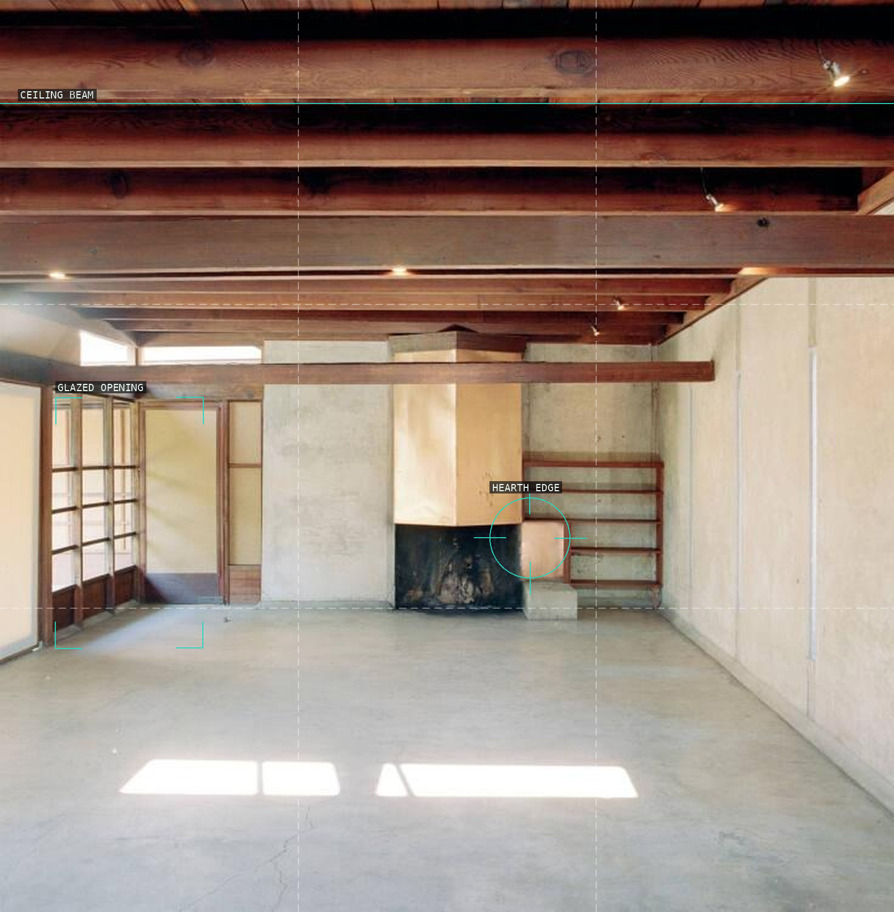
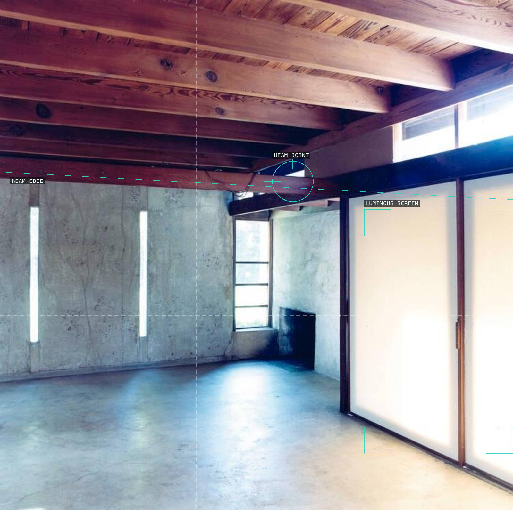
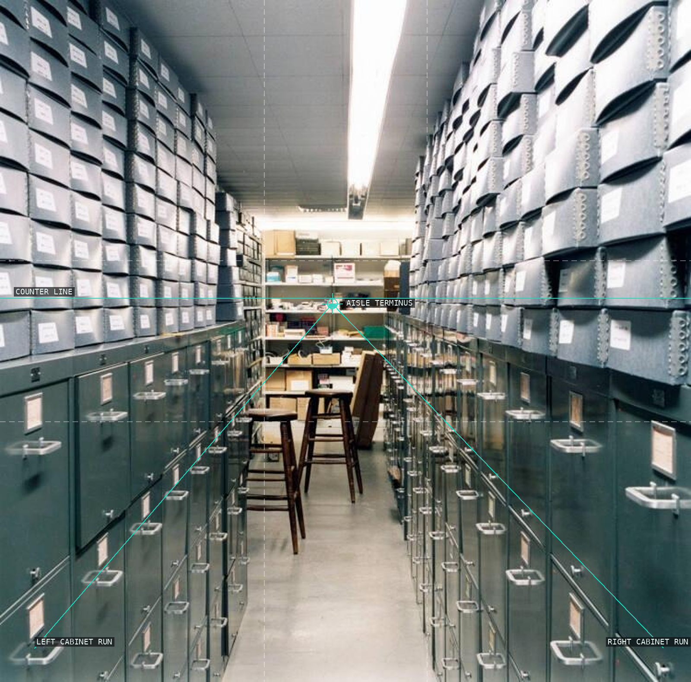
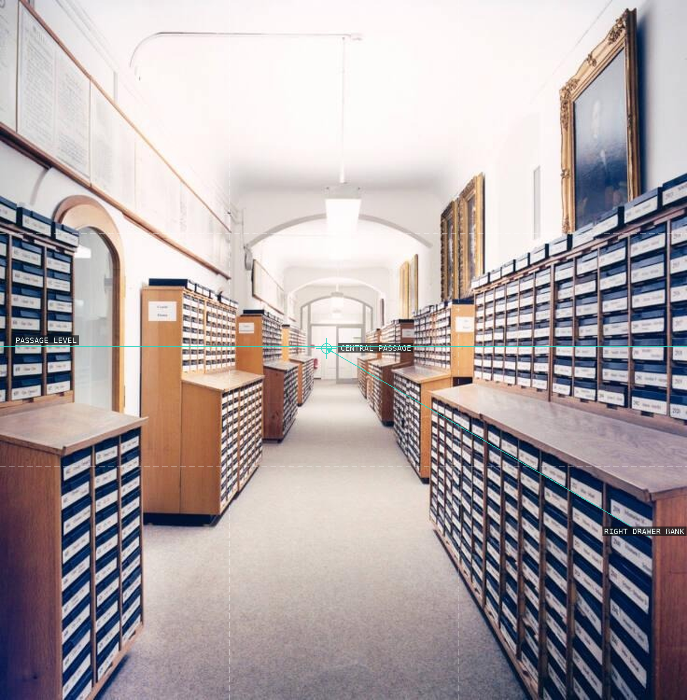
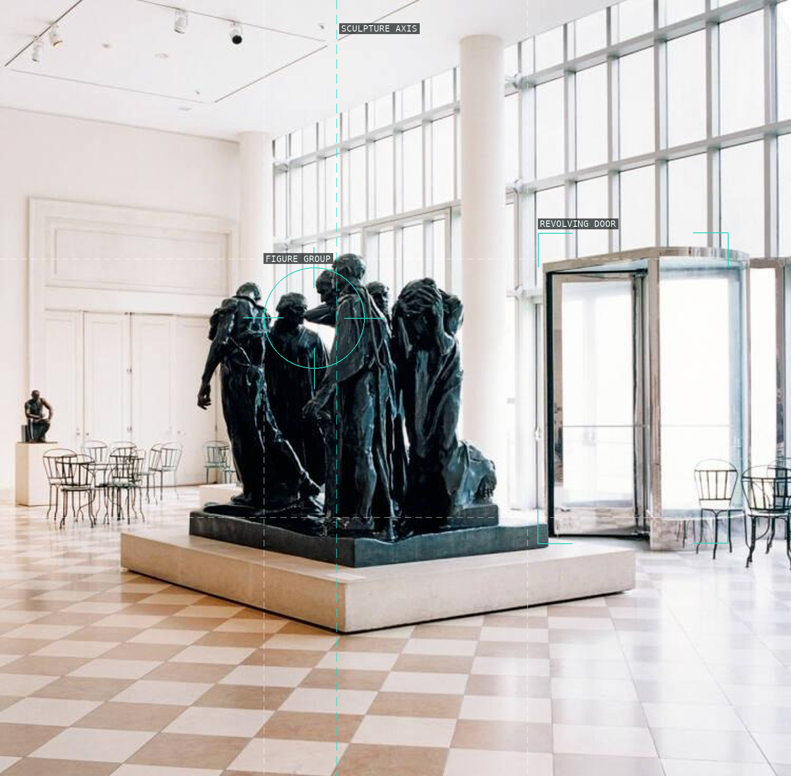
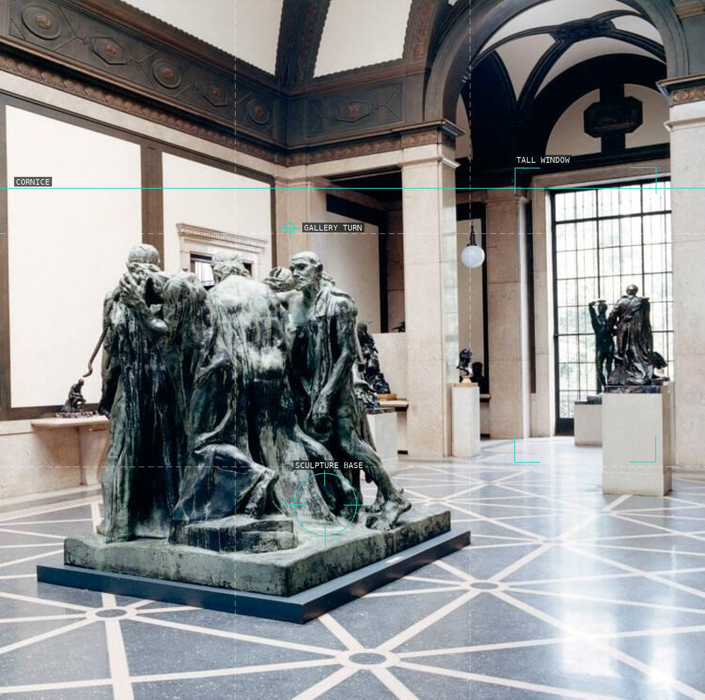
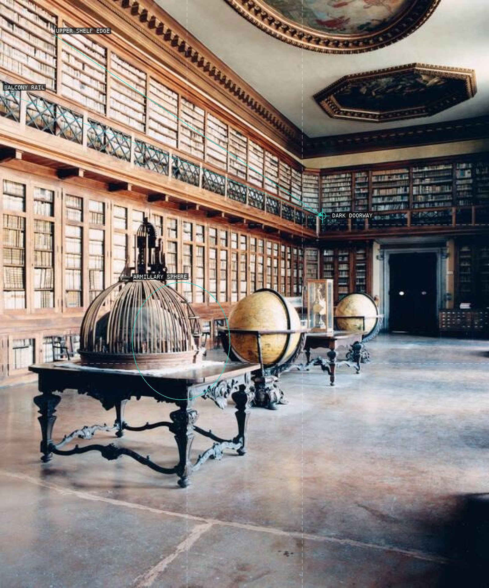
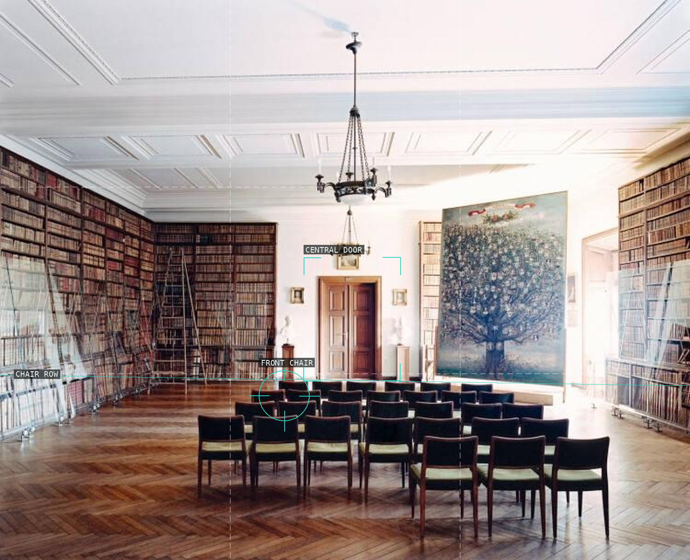
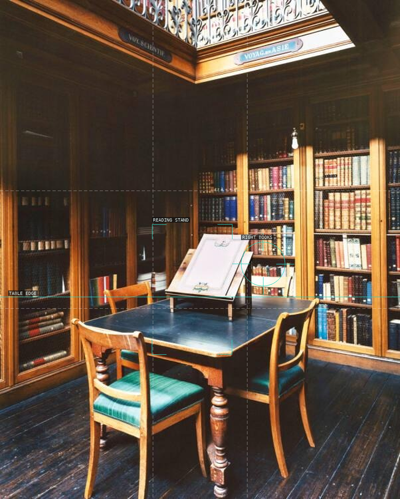
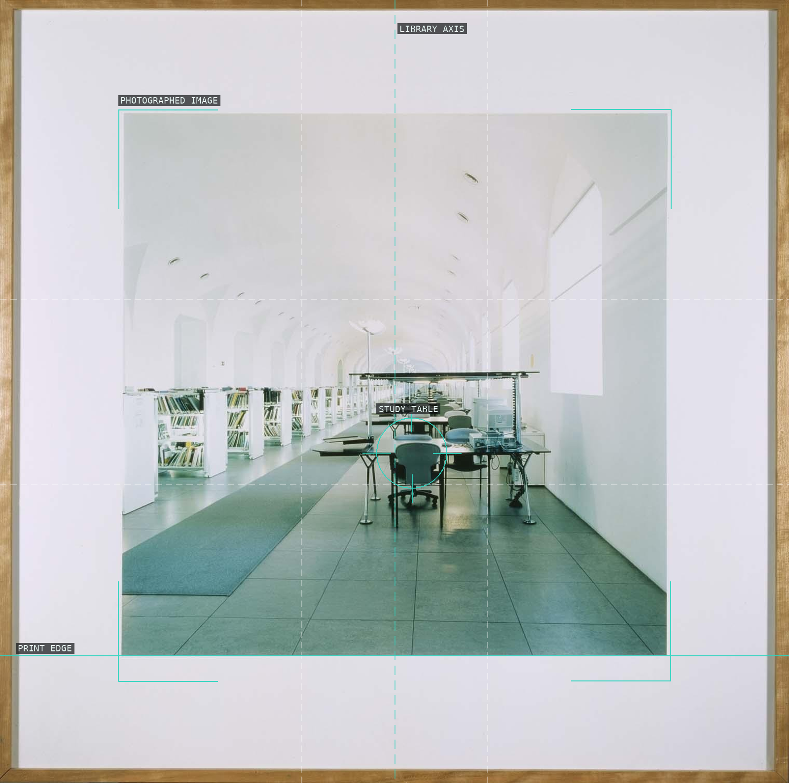

/* candida-hofer - proofs */
10 plates. Deterministic overlays rendered by the composition-analysis skill.

01-schindler-house-los-angeles-viii
Beam, opening, and hearth give the empty room its measured weight.

02-schindler-house-los-angeles-iii
A slanting beam meets a luminous screen across cool and warm planes.

03-harvard-university-art-museum-cambridge-i
Filing cabinets converge on a compact workroom terminus.

04-landesbibliothek-dresden-ii
Drawer banks tighten the bright passage through the archive.

05-burger-von-calais-metropolitan-museum-iii
A dark sculpture group interrupts a luminous museum grid.

06-rodin-museum-philadelphia-iv
Sculpture, window, and cornice connect a chain of galleries.

07-biblioteca-seminario-patriarcale-venezia-iii
Shelf edges lead past an armillary sphere toward a dark doorway.

08-osterreichische-nationalbibliothek-vi
Chair rows and a central door prepare the library for an absent audience.

09-teylers-museum-haarlem-i
A reading stand rises from the table inside a dark book-lined room.

10-biblioteca-del-mncars-iii-madrid
A photographed print holds an empty study room inside its own border.